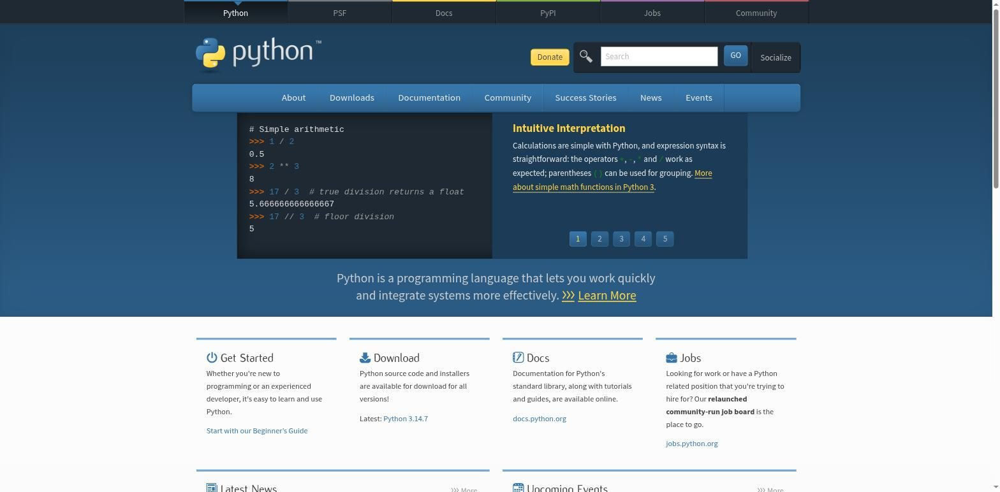
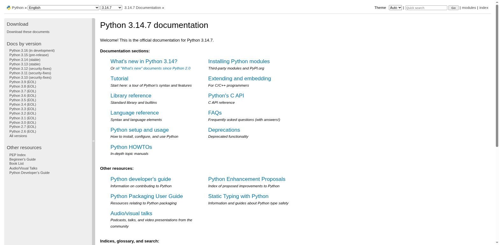
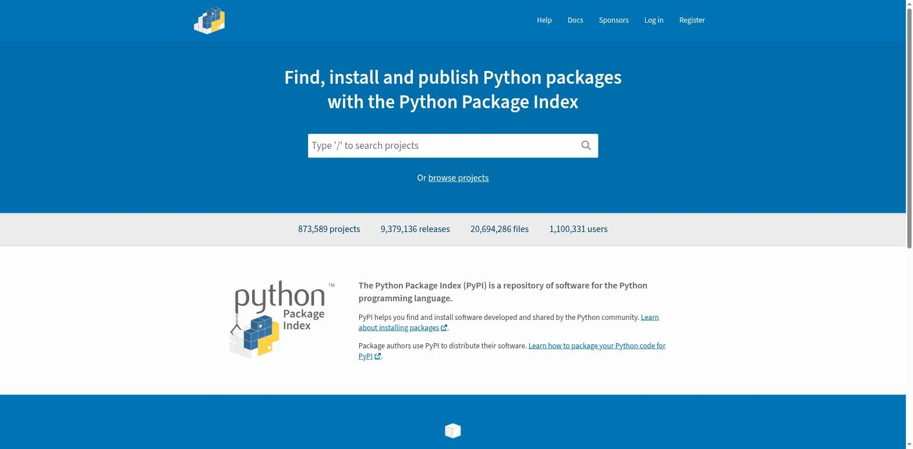

python.org, документация и PyPI
Три места, с которыми полезно познакомиться в самом начале: официальный сайт, официальная документация и каталог сторонних пакетов.
python.org — официальный сайт
python.org — официальный сайт языка Python, которым управляет Python Software Foundation. Это первое место, где стоит искать официальную информацию: как установить Python, где почитать документацию, что нового в последнем релизе.

На главной странице стоит запомнить четыре раздела верхнего меню:
- Downloads — установщики Python для Windows, macOS и Linux (этим вы воспользуетесь уже в главе 2).
- Documentation — ссылка на docs.python.org, официальную документацию (подробнее ниже).
- Community — форумы, списки рассылки, локальные сообщества Python-разработчиков.
- PSF (вкладка вверху страницы) — раздел о самой организации, Python Software Foundation.
python.org в адресной строке браузера.Официальная документация: docs.python.org
Документация — это не что-то, что читают только опытные разработчики. Хорошая документация — рабочий инструмент на каждый день, которым пользуются абсолютно все, включая авторов самого языка.

На странице документации сразу видно три разных раздела, и стоит понимать разницу между ними:
- Tutorial — учебное введение в язык, написанное для тех, кто уже немного знаком с программированием. Хороший источник для повторения, но не замена этой книге для полного новичка.
- Library Reference — подробное описание стандартной библиотеки: что
умеет каждый встроенный модуль и функция. Именно сюда вы будете заглядывать чаще всего,
когда захотите узнать, что ещё умеет, например,
print(). - Language Reference — формальное, самое строгое описание правил самого языка. Обычно не нужен новичку — рассчитан на очень точные технические вопросы.
PyPI: сторонние пакеты Python
В Python уже встроено много полезного — это называется стандартной библиотекой. Но существует ещё огромное количество готовых инструментов, написанных другими разработчиками и опубликованных отдельно — их называют пакетами (или библиотеками). Они расширяют возможности Python далеко за пределы того, что есть «из коробки».
Главное хранилище таких пакетов называется PyPI — Python Package Index (pypi.org). Когда кто-то говорит «поставь пакет через pip» — pip как раз и загружает пакет именно с PyPI.

pip и виртуальными окружениями понадобится вам позже в этой книге — пока достаточно понимать саму идею экосистемы пакетов.